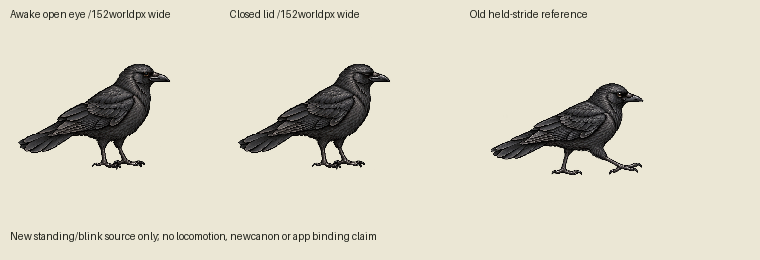
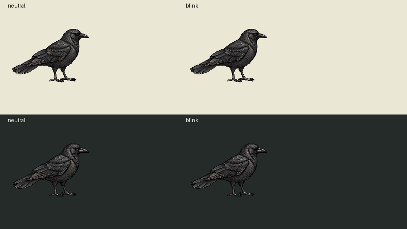
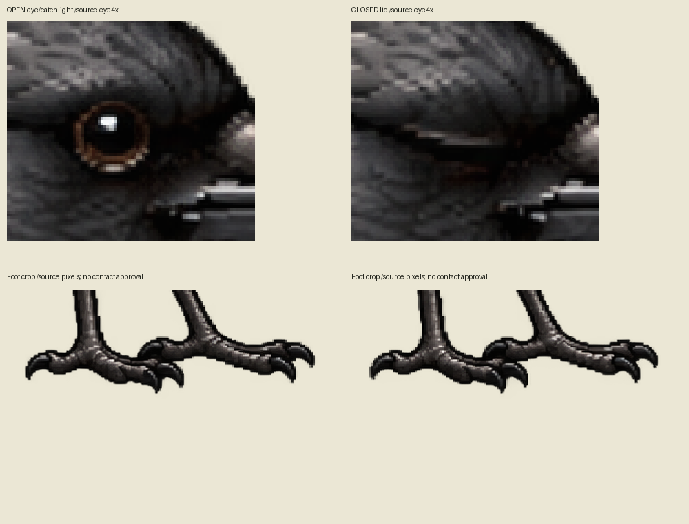

One native reference edit, two actual drawings: relaxed supported open-eye stand and closed eyelid. Same charcoal individual intent; no locomotion, newcanon, app binding or physics approval.
30Hz source sequence75open,3closed,42open:4seconds with100ms blink. First image proposed yard/world size; second2× output pixels.
Normal-size source comparison and light/dark previews:


Enlarged source eye/feet crop. These are direct art-pixel crops, not browser captures.

Primary source IDs, original, exact prompt and alpha/contact/proportion diagnostics are retained in PRIMARY-SOURCE-MANIFEST.json and measurements.json. Independent review pending; no canonical Sharp receipt or runtime admission.